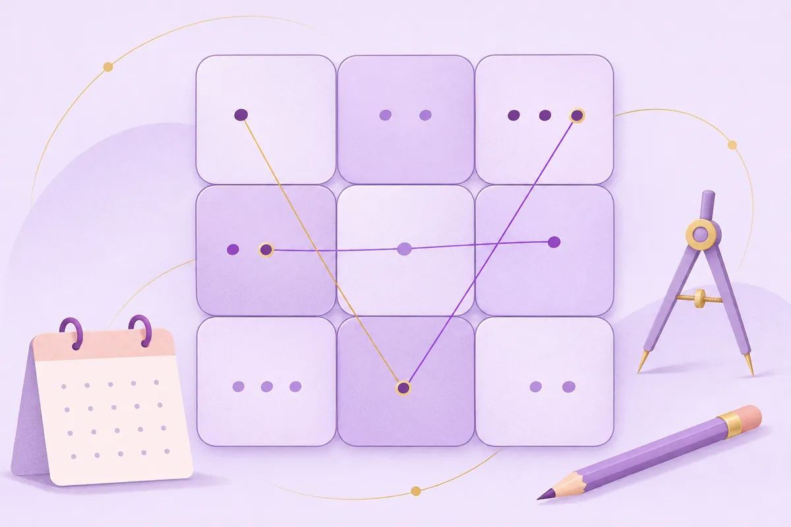

База знаний школы
Библиотека цифрового психоанализа
Разборы, статьи и подарки школы Аллы Александровой. Найдите свою тему или начните с расчёта психоматрицы по дате рождения.
15 1 1992
28 10 26 8
11111
4пусто
7пусто
2222
55
888
3пусто
66
999
Психоматрица для 15.1.1992. Как её посчитать →
Разделы
Пять тем, с которыми к школе приходят чаще всего
01
Деньги и долги
Почему долги повторяются и как с ними связана дата рождения
Читать →02
Отношения
Отношения с собой, близкими и партнёром через психоматрицу
Читать →
03
Женская реализация
Где ваша сила и что мешает реализоваться
Читать →
04
Психоматрица с нуля
Как посчитать свою психоматрицу и прочитать её по шагам
Читать →05
Китайская медицина и здоровье
Схема здоровья по дате рождения и энергия органов
Читать →С чего начать
1
Посчитайте психоматрицу
Восемь шагов на листке бумаги по вашей дате рождения.
2
Выберите тему
Деньги, отношения, реализация или здоровье: в каждом разделе разборы из эфиров школы.
3
Заберите подарок
Методички и гайды школы придут в Telegram.